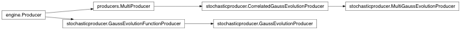
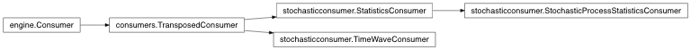

API Documentation¶
Timewave Engine¶
engine.Engine |
This class implements Monte Carlo engine |
engine.State |
simulation state |
engine.Producer |
abstract class implementing simple producer for a model between grid dates |
engine.Consumer |
base class for simulation consumers |
module containing simulation method related classes incl. multiprocessing support
-
class
engine.Consumer(func=None)[source]¶ Bases:
objectbase class for simulation consumers
initiatlizes consumer by providing a function :param func: consumer function with exact 1 argument which will consume the producer state. Default will return state.value
-
class
engine.Engine(producer=None, consumer=None)[source]¶ Bases:
objectThis class implements Monte Carlo engine
-
run(grid=None, num_of_paths=2000, seed=0, num_of_workers=4, profiling=False)[source]¶ implements simulation
Parameters: - grid (list(date)) – list of Monte Carlo grid dates
- num_of_paths (int) – number of Monte Carlo paths
- seed (hashable) – seed used for rnds initialisation (additional adjustment in place)
- or None num_of_workers (int) – number of parallel workers (default: cpu_count()), if None no parallel processing is used
- profiling (bool) – signal whether to use profiling, True means used, else not
Return object: final consumer state
It returns a list of lists. The list contains per path a list produced by consumer at observation dates
-
-
class
engine.Producer(func=None, initial_state=None)[source]¶ Bases:
objectabstract class implementing simple producer for a model between grid dates
-
evolve(new_date)[source]¶ evolve to the new process state at the next date, i.e. do one step in the simulation
Parameters: new_date (date) – date of the new state Return State:
-
Timewave Producer¶
producers.DeterministicProducer |
|
producers.StringReaderProducer |
|
producers.MultiProducer |
initializer |

module containing brownian motion model related classes
-
class
producers.DeterministicProducer(sample_list, func=None, initial_state=None)[source]¶ Bases:
engine.Producer
-
class
producers.MultiProducer(*producers)[source]¶ Bases:
engine.Producerinitializer
Parameters: or produces (list(Producer)) – list of producers to be used one after another -
evolve(new_date)[source]¶ evolve to the new process state at the next date, i.e. do one step in the simulation
Parameters: new_date (date) – date of the new state Return State:
-
initialize_path(path_num=None)[source]¶ inits producer for next path, i.e. sets current state to initial state
-
initialize_worker(process_num=None)[source]¶ inits producer for a simulation run on a single process
-
producers= None¶ list(Producer) – list of consumers to be used one after another
-
Timewave Consumer¶
consumers.QuietConsumer |
QuietConsumer returns nothing, since QuietConsumer does simply not populate result in finalize_path() |
consumers.StringWriterConsumer |
|
consumers.StackedConsumer |
stacked version of consumer, i.e. a following consumer is populated with out state of the preceding one |
consumers.ConsumerConsumer |
class implementing the consumer interface |
consumers.MultiConsumer |
initializer |
consumers.ResetConsumer |
FunctionConsumer that admits a reset function for each path |
consumers.TransposedConsumer |
TransposedConsumer returns sample distribution per grid point not per sample path |
-
class
consumers.ConsumerConsumer(*consumers)[source]¶ Bases:
engine.Consumerclass implementing the consumer interface several consumers can be saved and are executed one after another only the result of the last consumer is returned (see finalize_worker)
initializer
Parameters: list(Consumer) – -
consume(state)[source]¶ returns pair containing the result of consumption and consumer state the returned state is equal to the state.get_short_rate() the returned consume state is None
Parameters: state (State) – specific process state Return object: the new consumer state
-
get(queue_get)[source]¶ get to given consumer states. This function is used for merging of results of parallelized MC. The first state is used for merging in place. The states must be disjoint.
Parameters: queue_get (object) – second consumer state
-
initial_state= None¶ list(Consumer) – list of consumers to be used one after another
-
-
class
consumers.MultiConsumer(*consumers)[source]¶ Bases:
consumers.ConsumerConsumerinitializer
Parameters: list(Consumer) –
-
class
consumers.QuietConsumer(func=None)[source]¶ Bases:
engine.ConsumerQuietConsumer returns nothing, since QuietConsumer does simply not populate result in finalize_path()
initiatlizes consumer by providing a function :param func: consumer function with exact 1 argument which will consume the producer state. Default will return state.value
-
class
consumers.ResetConsumer(fixing_func=None, reset_func=None)[source]¶ Bases:
engine.ConsumerFunctionConsumer that admits a reset function for each path
-
class
consumers.StackedConsumer(*consumers)[source]¶ Bases:
engine.Consumerstacked version of consumer, i.e. a following consumer is populated with out state of the preceding one
-
class
consumers.StringWriterConsumer(str_decoder=None)[source]¶ Bases:
engine.Consumer
-
class
consumers.TransposedConsumer(func=None)[source]¶ Bases:
engine.ConsumerTransposedConsumer returns sample distribution per grid point not per sample path
initiatlizes consumer by providing a function :param func: consumer function with exact 1 argument which will consume the producer state. Default will return state.value
Stochastic Process¶

module containing brownian motion model related classes
-
class
stochasticprocess.GeometricBrownianMotion(mu=0.0, sigma=1.0, start=1.0)[source]¶ Bases:
stochasticprocess.WienerProcessclass implementing general Gauss process between grid dates
-
class
stochasticprocess.MultiGauss(mu=[0.0], covar=[[1.0]], start=[0.0])[source]¶ Bases:
stochasticprocess.MultivariateStochasticProcessclass implementing multi dimensional brownian motion
-
class
stochasticprocess.OrnsteinUhlenbeckProcess(theta=0.1, mu=0.1, sigma=0.1, start=0.0)[source]¶ Bases:
stochasticprocess.StochasticProcessclass implementing Ornstein Uhlenbeck process
Parameters: - theta (flaot) – mean reversion speed
- mu (float) – drift
- sigma (float) – diffusion
- start (float) – initial value
\[dx_t = \theta ( \mu - x_t) dt + \sigma dW_t, x_0 = a\]
-
class
stochasticprocess.SABR(alpha=0.1, beta=0.2, nu=0.3, rho=-0.2, start=0.05)[source]¶ Bases:
stochasticprocess.MultivariateStochasticProcessclass implementing the Hagan et al SABR model
-
class
stochasticprocess.StochasticProcess(start)[source]¶ Bases:
object-
diffusion_driver¶ diffusion driver are the underlying dW of each process X in a SDE like dX = m dt + s dW :return list(StochasticProcess):
-
evolve(x, s, e, q)[source]¶ Parameters: - x (float) – current state value, i.e. value before evolution step
- s (float) – current point in time, i.e. start point of next evolution step
- e (float) – next point in time, i.e. end point of evolution step
- q (float) – standard normal random number to do step
Return float: next state value, i.e. value after evolution step
evolves process state x from s to e in time depending of standard normal random variable q
-
Stochastic Process Simulation¶
 module containing stochastic process model producer
Bases:
producers.MultiProducerclass implementing general correlated Gauss process between grid dates
Parameters: - producers (list(GaussEvolutionProducer)) – list of producers to evolve
- or dict((StochasticProcess, StochasticProcess) (list(list(float))) – float) or None correlation: correlation matrix of underlying multivariate Gauss process of diffusion drivers. If dict keys must be pairs of diffusion drivers, diagonal and zero entries can be omitted. If not give, all drives are evolve independently.
- or None diffusion_driver (list(StochasticProcess)) – list of diffusion drivers indexing the correlation matrix. If not given and correlation is not an IndexMatrix, e.g. comes already with list of drivers, it is assumed that each process producer has different drivers and the correlation is order in the same way.
evolve to the new process state at the next date
Parameters: new_date (date) – date or point in time of the new state Return State:
-
class
stochasticproducer.GaussEvolutionFunctionProducer(func=None, initial_state=None, length=None)[source]¶ Bases:
engine.Producerclass implementing general Gauss process between grid dates
Parameters: - func (callable) – evolve function, e.g. lambda x, s, e, q: x + sqrt(e - s) * q by default with x current state value, s current point in time, i.e. start point of next evolution step, e next point in time, i.e. end point of evolution step, q standard normal random number to do step
- initial_state – initial state (value) of evolution,
- or None length (int) – length of q as a list of Gauss random numbers, if None or 0 the evolution function func will be invoked with q not as a list but a float random number.
class implementing general Gauss process between grid dates and provides state to any evolve style function foo(x, s, e, q) with x last state, s last state time, e current point in time and q current Gauss process state
-
class
stochasticproducer.GaussEvolutionProducer(process)[source]¶ Bases:
stochasticproducer.GaussEvolutionFunctionProducerproducer to bring diffusion process to life
Parameters: process (StochasticProcess) – diffusion process to evolve
-
class
stochasticproducer.MultiGaussEvolutionProducer(process_list, correlation=None, diffusion_driver=None)[source]¶ Bases:
stochasticproducer.CorrelatedGaussEvolutionProducerclass implementing multi variant GaussEvolutionProducer
-
class
stochasticconsumer.StatisticsConsumer(func=None, statistics=None)[source]¶ Bases:
consumers.TransposedConsumerrun basic statistics on storage consumer result per time slice
-
class
stochasticconsumer.StochasticProcessStatisticsConsumer(func=None, statistics=None)[source]¶ Bases:
stochasticconsumer.StatisticsConsumerrun basic statistics on storage consumer result as a stochastic process
-
class
stochasticconsumer.TimeWaveConsumer(func=None)[source]¶ Bases:
consumers.TransposedConsumerinitiatlizes consumer by providing a function :param func: consumer function with exact 1 argument which will consume the producer state. Default will return state.value